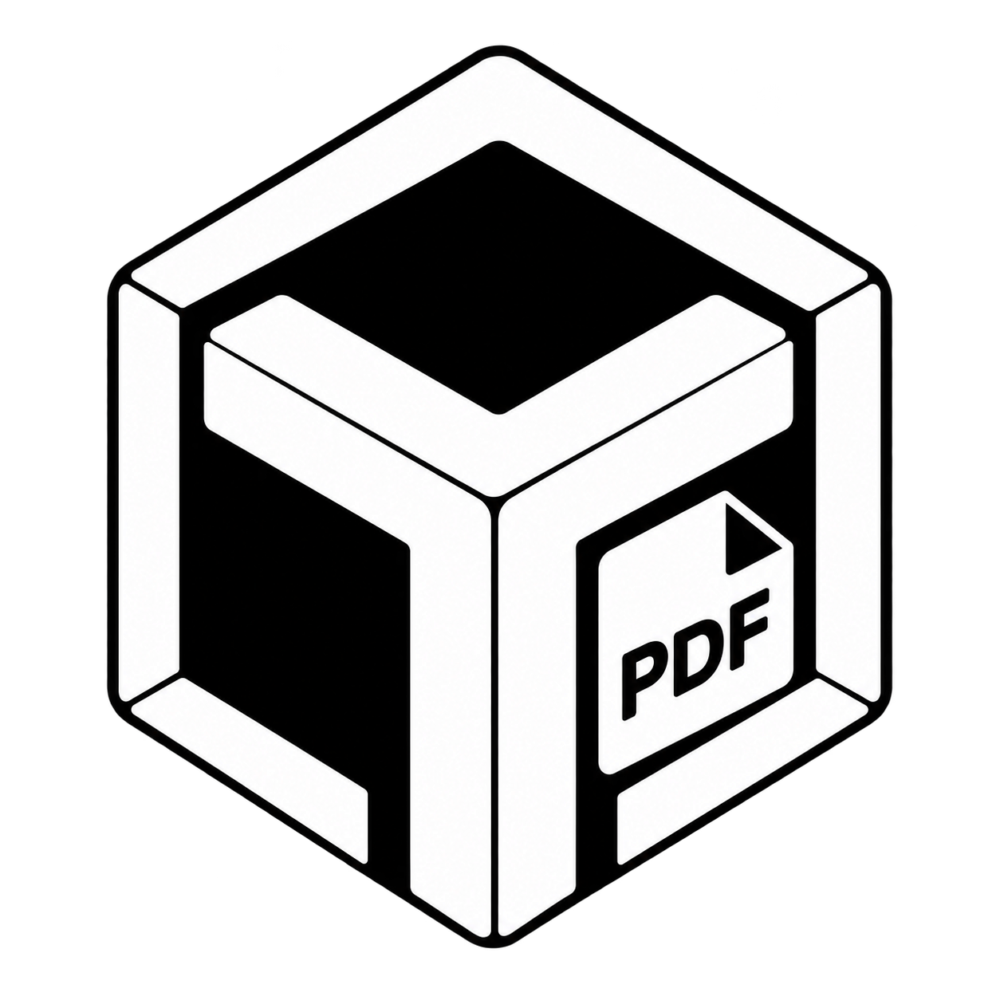
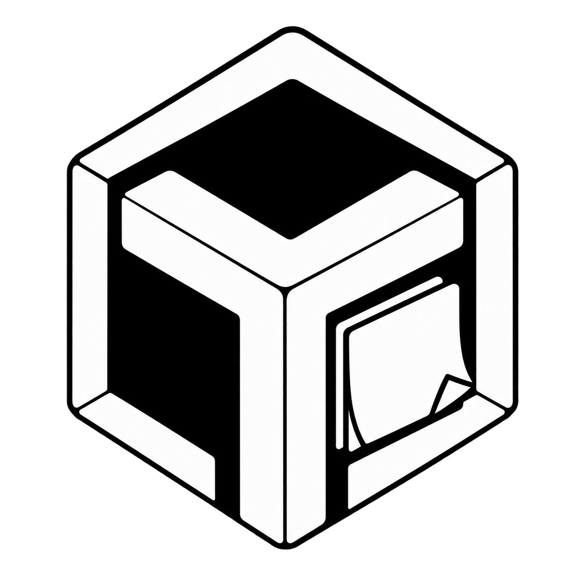

TText
テキストエディタ
シンプルで高速なWindows向けテキストエディタ。日常の編集から開発まで、軽快な操作を目指します。
▣ Windows 10 / 11
Small Tools. Big Possibilities.
テキストエディタ
シンプルで高速なWindows向けテキストエディタ。日常の編集から開発まで、軽快な操作を目指します。

PDFツール
PDFの閲覧・結合・分割・ページ編集などをシンプルに。必要な機能を、使いやすくまとめます。
メール閲覧ツール
シンプルで快適なメール閲覧・管理ツール。大切なやり取りを、すっきり見やすく。
電子書籍管理ツール
ローカルの書籍をすっきり管理。読む・探す・整理するを、シンプルな操作で。

付箋紙アプリ
デスクトップにさっと残せる、シンプルな付箋紙アプリ。日々のメモやちょっとした覚え書きを軽快に管理します。
次のツールを開発中
もっと便利に、もっと楽しく。新しいTY-Dev Worksアプリを追加していきます。
ABOUT
TY-Dev Worksは、シンプルで使いやすいWindowsアプリケーションを開発する個人ソフトウェアプロジェクトです。
「必要な機能を、分かりやすく、軽快に。」を大切に、日常で気軽に使えるツールを制作しています。
TText、TPdf、TMail、TBookなど、用途ごとに独立した小さなアプリケーションをTシリーズとして公開しています。